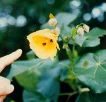

1７
黃槿
外號:環保衛生紙
黃槿在海邊算是最高大的植物，樹高可達１０公尺，尤其是那特大號的葉子，是樹木中少有，形狀像心形，最大可達３０公分，他的黃色花朵十分美麗，大小約５∼８公分，形狀像個羽毛球。黃槿生長快速，四季都開花，但是以春夏最多，常常被用來做為行道樹、防風樹等。在他那個塑膠袋未普及的時代過年過節的時候常去摘取黃槿的葉子利用它來枕粿或草粿！放在蒸籠裡一起蒸，蒸妥後，托著粿葉吃，方便又不黏手。」而且在以前農業社會中沒有衛生紙，常用黃槿葉來代替，以後到海濱不必帶衛生紙。 |
||
|  | ||